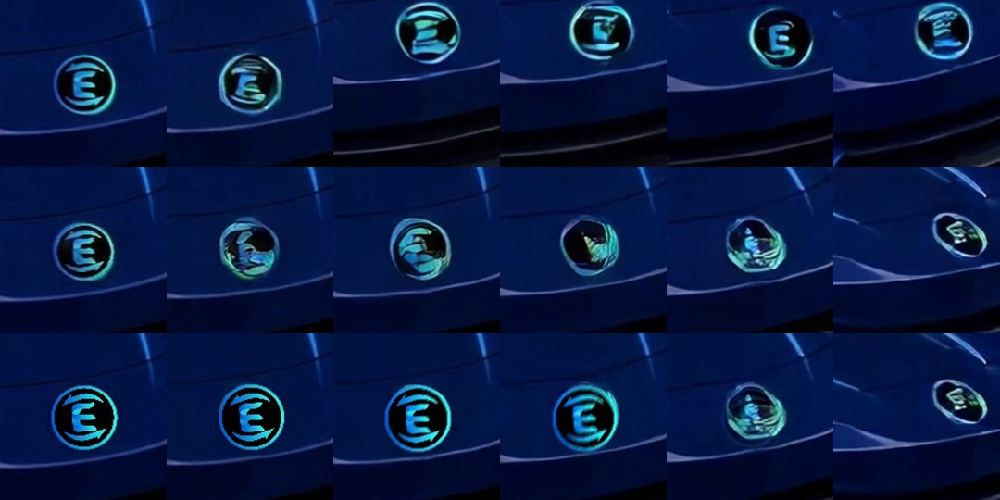
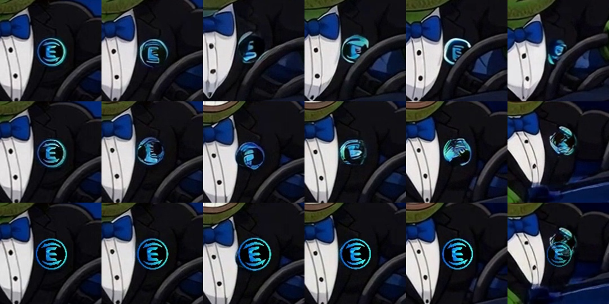
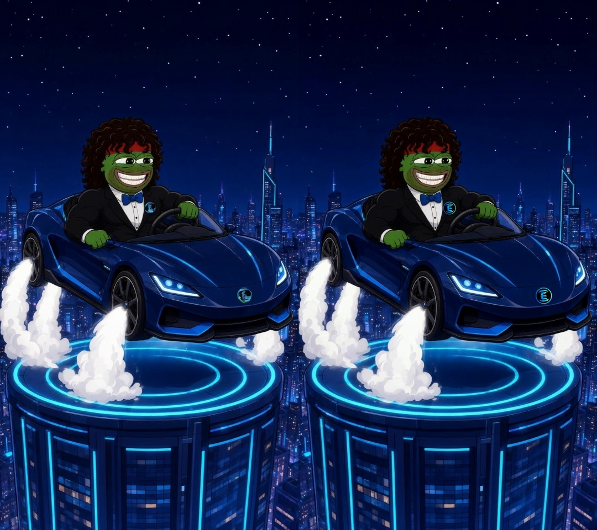
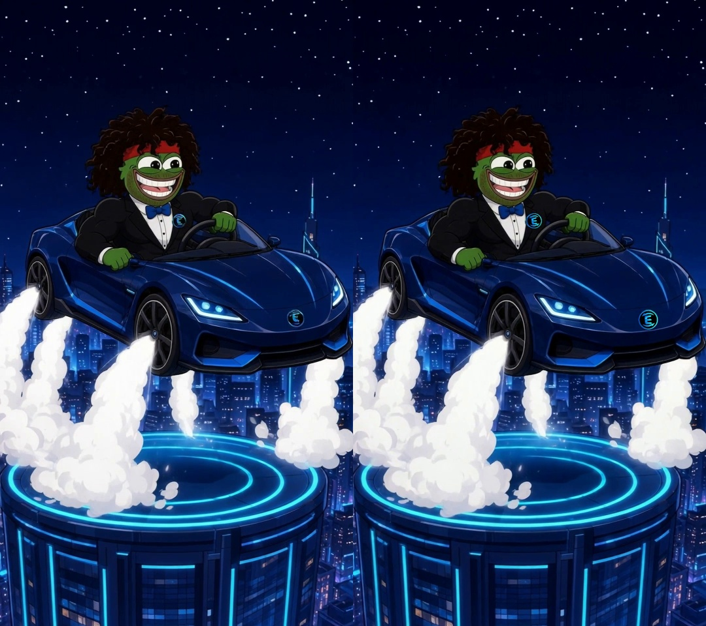
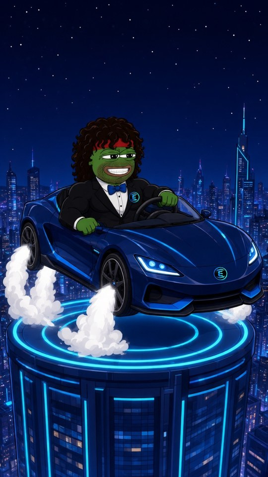

Logo burn-in + tracked re-stamp: EP01 roadster launch (test)
Side-by-side (A · B · C, with zoomed nose badge and lapel pin)
Stills: nose badge at t = 0, 0.5, 1.0, 1.5, 2.0, 2.5s (rows A / B / C)

Stills: lapel pin (rows A / B / C)

Full frame B vs C (t=0.5s, t=1.25s)


The three 9:16 clips
Burned-in start plate (real icon.png, perspective + shading)

Method
1) icon.png is warped onto the nose badge and the pin in the start plate with a slight keystone and rotation, a top-to-bottom light falloff, a faint specular highlight and a dark paint-gap rim. Colours are not changed. 2) Kling 2.6 Pro i2v with the same prompt and settings as EP01's launch shot. 3) logo_track.py tracks the car or suit surface around the mark, not the mark itself, because Kling redraws the mark. It uses LK flow with a forward-backward check and a RANSAC similarity fit, refined each frame against a frame-0 reference patch (masked ECC), so drift is corrected. It then applies confidence-weighted smoothing of the corners, median hysteresis on confidence so one bad frame can't flash the smudge through, velocity-matched motion blur and luminance matching, and fades out where confidence drops. On the frames where the stamp is fully visible, the tracked centre jitters by about 0.4–0.6 px/frame² on average (max about 2.5).
Cost
1 Kling job: 0.156 USDC (cap 0.40). Tracking and re-stamp are free.